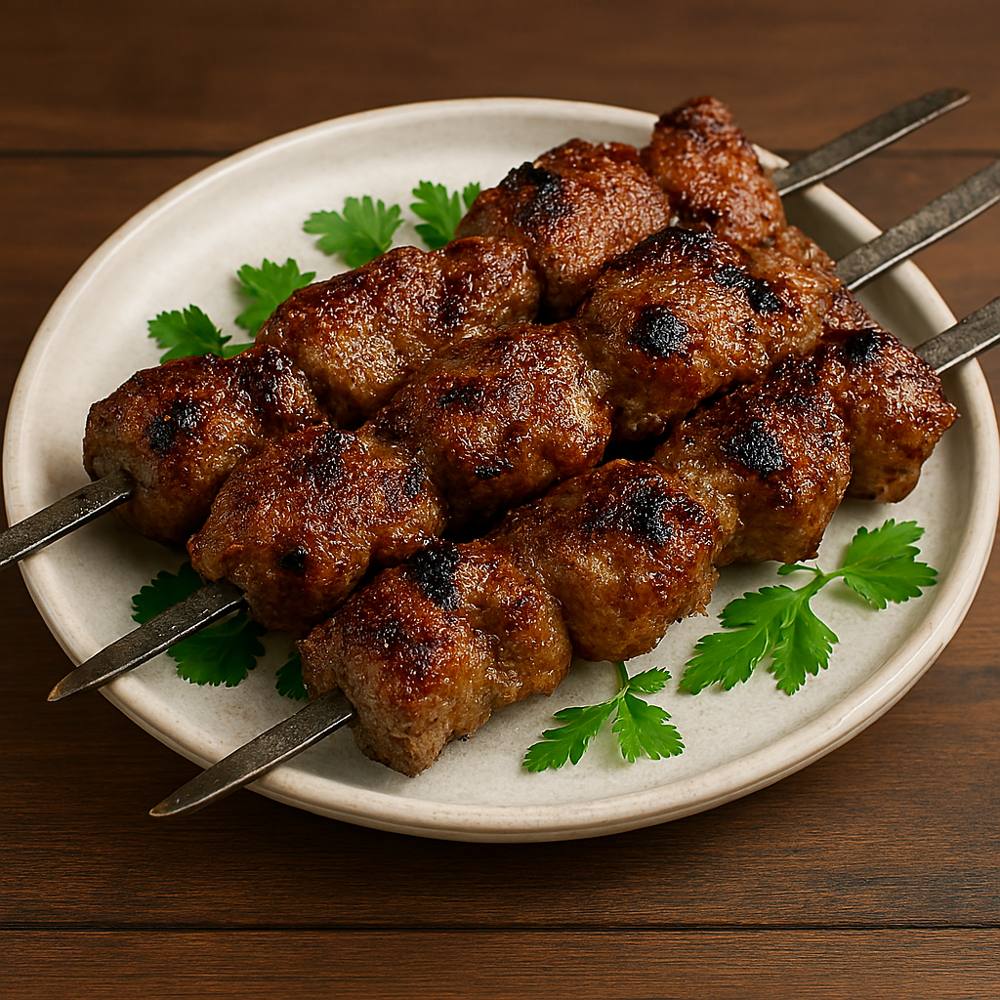
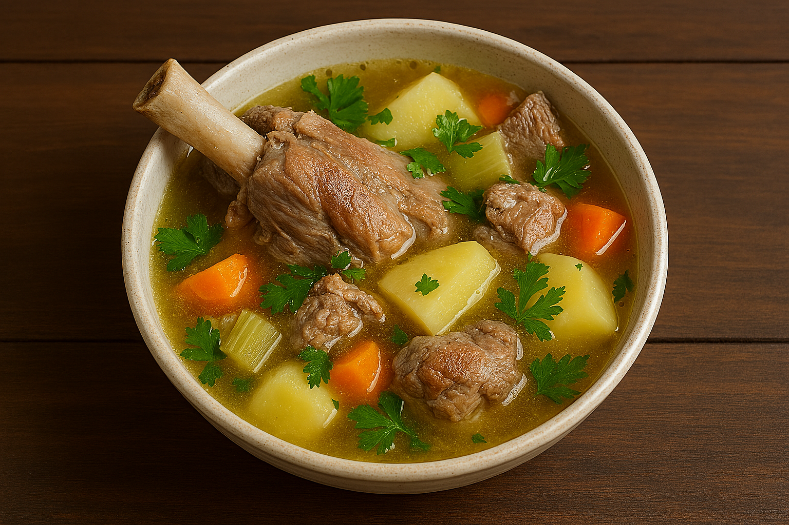
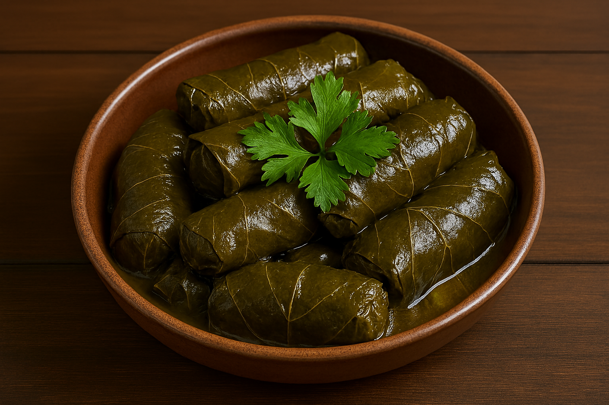

Similar Recipes

Shashlik

Khinkali

Traditional grape leaf rolls with savory filling - a true Armenian culinary masterpiece

Remove the grape leaves from the brine and rinse them with clean water. Gently separate the leaves and let them dry on a paper towel. If the leaves are dry, soak them in warm water for 5 minutes.
Finely chop the onion and garlic. Mix the ground beef with rice, onion, garlic, paprika, cumin, salt, pepper, and fresh dill. Mix well to ensure all ingredients are evenly distributed.
Place the leaf shiny side down. Put about 2 tablespoons of filling on the leaf. Fold the edges of the leaf inward and roll tightly, starting from the base of the leaf. Place seam side down at the bottom of the pot.
Finely chop the tomatoes. Place the tomatoes in a pot and add oil. Add half of the tomatoes, then place the rolled dolma seam side down, cover with the remaining tomatoes and a small amount of water (about 1 cup).
Bring to a boil, then reduce heat to medium. Cook covered for about 45 minutes, until the rice is done and the filling is fully cooked.
Remove the dolma from the pot and place on a serving dish. Pour the remaining sauce over the top. Serve hot with yogurt and fresh cilantro. This dish is perfect for festive gatherings.
Calories
Protein
Fat
Carbohydrates


💬 Tips and Comments